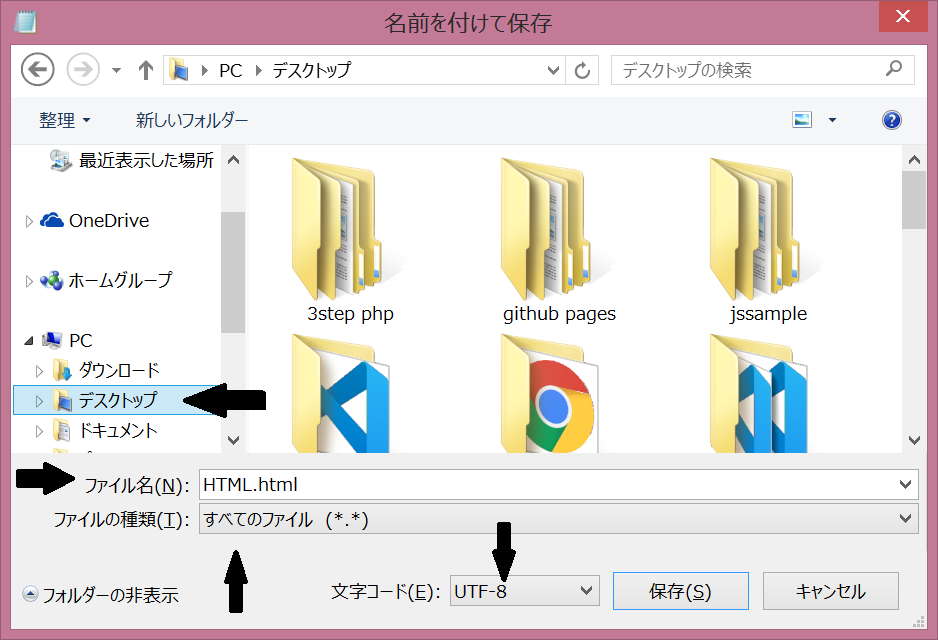

HTML&CSS
メモ帳機能を使ってブラウザに文字を表示してみよう！
メモ帳を開いて、下のコードをコピー、ペーストします。改行や空白もそのままコピーしてください。
<!DOCTYPE html>
<html lang="ja">
<head>
<meta charset="UTF-8">
<title>HTMLをためしてみよう</title>
<link rel="stylesheet" href="style.css">
</head>
<body>
はじめてのHTML+CSS!
</body>
</html>
上部のファイルを開いて名前を付けて保存するを選びます。
保存場所はデスクトップ上にします。ファイル名はなんでもいいですが、拡張子の.htmlをつけます。ここではHTML.html としました。ファイルの種類はすべてのファイルを選択します。いちばん下の文字コードはUTF-8を選択し、保存します。
保存されたファイルは設定によってアイコンがちがいます。
の場合はアイコンをダブルクリックすると、ブラウザが開き、表示されます。
タブにHTMLをためしてみよう、本文にはじめてのHTML+CSS!と表示されています。
そうでない場合はブラウザを開き、上部のタブの部分にファイルをドラッグ＆ドロップします。
あるいはファイルを右クリックしてプログラムから開くからブラウザを指定します。
ブラウザは小さくしておいて、HTML.htmlファイルをメモ帳で開いてみましょう。赤丸の部分を好きな文章に変更し、上書き保存して、ブラウザをリロード refresh してみてください。表示内容が変わりましたね。

さっきの文字の色や大きさを変えてみよう！
新しくメモ帳を開いて下のコードをコピー、ペーストして同じようにデスクトップに保存してください。必ずデスクトップに保存し、ファイル名は style.css にしてください。
body {
margin: 0;
padding: 32px;
font-size: 32px;
background-color: mistyrose;
color: darkgreen;
border-bottom: 1px solid darkgreen;
}
先ほどのブラウザをリロードしてください。背景、文字や大きさが変わって、線が出ましたね。（ブラウザで開いているファイルは.htmlで保存しているファイルです）
をダブルクリックして開きます。font-sizeは文字の大きさ、background-colorは背景の色をcolorは文字の色を、border-bottomは下線を指定しています。スペースは変えないように注意して大きさや色を変えてみてください。
メモ帳を上書き保存して、ブラウザをリロードしてください。それぞれ変わっていますね。
無料の学習サイトを活用しよう
dotinstallとprogateが有名です。私はdotinstallを利用しています。HTMLのレッスンだけでなく、JavaScriptの学習でもHTML+CSSのコードをかくので、JavaScriptも学びたい場合は同時に学習していってもいいと思います。

動画で学べます。無料で公開されているレッスンもあり、動画を視聴するだけなら会員登録せずに見ることができます。